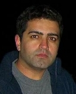
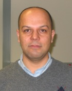

|

| James
P. (Jim) Reilly, B.A.Sc. (Waterloo), M.Eng.,
Ph.D. (McMaster), P.Eng |
|
reillyj@mcmaster.ca |
|
(905) 525-9140
ext: 22895 |
|
(905) 523-4407 |
|
|
Personal Profile
Jim Reilly graduated with
a BASc degree from the University of Waterloo in electrical
engineering in 1973. He received his M.Eng and Ph.D.
from McMaster University, Hamilton Ont., Canada in 1977
and 1980 respectively, both in electrical engineering.
He worked from 1973-75 in the CATV industry, and from
1980-85 at then Bell-Northern Research, Ottawa, Canada,
where he was involved in the development of terrestrial
digital microwave radio and multiplexing technology
for digital transmission systems. He joined the faculty
of McMaster University in 1985 as an associate professor,
and was promoted to the rank of full professor in 1992.
Prof. Reilly's research interests are
in several aspects of signal processing, specifically
blind signal separation, blind signal identification,
array signal processing, and Bayesian methods for signal
processing in general. His non-academic interests include
photography, squash, cooking, and music.
Dr. Reilly is a registered professional
engineer in the province of Ontario.
|
| Graduate
Stduents
|
| Publications
|
|
 |

| Siamak Salari,
M.A.Sc., B.Sc. |
| |
salaris@mcmaster.ca |
| |
(905)-525-9140 |
|
| Personal Profile
- Ph.D. candidate
- Supervisors: Dr. John MacGregor,
Dr. Jim Reilly
- Research Title: Integration of Magnetic
Resonance Imaging (MRI) and Electroencephalography
(EEG) technologies.
- M.A.Sc in Chemical Engineering, McMaster
University, Hamilton, Canada (2007)
- Mechanical Engineer, Electricom Co.
Iran,Tehran
- B.S. in Mechanical engineering, Sharif
University of Technology, Iran, Tehran (2000)
- Research Assistant, Center of Excellence
in Energy Conversion, Sharif University of Technology
|
| Research Areas
- Integration of multiple imaging techniques
such as functional Magnetic Resonance Imaging (fMRI)
and Electro Encephalogram (EEG) to improve acquired
brain imaging qualities.
- Investigation, analysis and prediction
of brain functions using statistical, dynamic modelling
of brain imaging data.
- Prediction of treatment response
in brain disorders such as depression and schizophrenia
by statistical analysis of the brain images.
- MaSc Research title: “Development
of an apparatus and a methodology to use vibrational
signals to rapidly and inexpensively diagnose problems
with joints”
|
 |
|
| Maryam Ravan,
(Ph.D), M.A.Sc., B.Sc. |
| |
mravan@mail.ece.mcmaster.ca |
| |
(905)-525-9140 ext: 27935 |
|
| Personal Profile
- Postdoctoral Fellow in the Department
of Electrical and Computer Engineering, McMaster University
since January 2008
- Co-supervised by Dr. N. K. Nikolova
- PhD in Electrical Engineering, Amirkabir
University of Technology (Tehran Polytechnic), Tehran,
Iran
- M.A. Sc in Electrical Engineering,
Ferdowsi University, Mashhad, Iran.
- B.Sc. in Electrical Engineering,
Shiraz University, Shiraz, Iran
- Personal
Homepage
|
| Research Areas
- Machine Learning
- Signal/ Image Processing
- Optimization Techniques
- Computational Electromagnetic
- Non-destructive Testing
- Radar
|
| Publications
- “A Machine Learning Approach
for Distinguishing Age of Infants Using Auditory Evoked
Potentials”, to appear, Clinical Neurophysiology,
2011.
- “Machine Learning Methodologies
Using Pre-Treatment Electroencephalography Can Predict
The Symptomatic Response To Clozapine Therapy”,
Clinical Neurophysiology, Vol. 121, Issue 12, Dec.
2010, pp. 1998-2006.
- “Machine learning techniques
for the analysis of magnetic flux leakage images in
pipeline inspection”, IEEE Transactions on Magnetics,
2009.
- “Information theoretic enumeration
and tracking of multiple sources”, IEEE Transactions
on Signal Processing, 2007.
- “SVM classifier approach to
enumerate directional signals impinging on an array
of sensors”, in CCECE-2006.
- “Diagnosis of Psychiatric Disorders
Using EEG Data and Employing a Statistical Decision
Model”, IEEE Engineering, Medicine and Biology
Conference (EMBC), Buenos Aires, Argentina, Aug. 2010.
- “Using Pre-treatment EEG Data
to Predict Response to SSRI Treatment for MDD”,
IEEE Engineering, Medicine and Biology Conference
(EMBC) , Buenos Aires, Argentina, Aug. 2010.
- “ Predicting Response to SSRI
Treatment for MDD: A Pilot Study Using Machine Learning
Analysis of EEG Data”, Society of Biological
Psychiatry, 65 Annual Meeting, May 20-22, 2010 New
Orleans, Louisiana.
|
| |
|
| Ahmad Khodayari,
(Ph.D), M.A.Sc., B.Sc. |
| |
khodaya@mcmaster.ca |
| |
(905)-525-9140 ext: 23151 |
|
| Personal Profile
- Completed Ph.D August, 2010
- Co-supervised by Dr. Gary M. Hasey
- MASc in Electrical Engineering, majoring
in signal processing and telecommunication systems,
Tarbiat Modares University, Tehran, Iran
- BSc in Electrical Engineering, majoring
in electronics, Iran University of Science and Technology,
Tehran, Iran
- Personal
Homepage
|
| Research Areas
- Machine Learning
- Biomedical Engineering, Neuroscience
- Signal Processing, Parameter Estimation,
Detection
- Non-destructive Testing: Gas/oil
Pipeline Inspection
|
| Publications
- “A Machine Learning Approach
for Distinguishing Age of Infants Using Auditory Evoked
Potentials”, to appear, Clinical Neurophysiology,
2011.
- “Machine Learning Methodologies
Using Pre-Treatment Electroencephalography Can Predict
The Symptomatic Response To Clozapine Therapy”,
Clinical Neurophysiology, Vol. 121, Issue 12, Dec.
2010, pp. 1998-2006.
- “Machine learning techniques
for the analysis of magnetic flux leakage images in
pipeline inspection”, IEEE Transactions on Magnetics,
2009.
- “Information theoretic enumeration
and tracking of multiple sources”, IEEE Transactions
on Signal Processing, 2007.
- “SVM classifier approach to
enumerate directional signals impinging on an array
of sensors”, in CCECE-2006.
- “Diagnosis of Psychiatric Disorders
Using EEG Data and Employing a Statistical Decision
Model”, IEEE Engineering, Medicine and Biology
Conference (EMBC), Buenos Aires, Argentina, Aug. 2010.
- “Using Pre-treatment EEG Data
to Predict Response to SSRI Treatment for MDD”,
IEEE Engineering, Medicine and Biology Conference
(EMBC) , Buenos Aires, Argentina, Aug. 2010.
- “ Predicting Response to SSRI
Treatment for MDD: A Pilot Study Using Machine Learning
Analysis of EEG Data”, Society of Biological
Psychiatry, 65 Annual Meeting, May 20-22, 2010 New
Orleans, Louisiana.
|
| |
|

| Amin Zia, (Ph.D.),
M.A.Sc, B.Eng. |
| |
amin@grads.ece.mcmaster.ca
|
| |
(905)-5259140 ext:27378 |
|
| Personal Profile
- PhD Canadidate in Electrical and
Computer Engineering since Septemter 2001 with Dr.
J.P. Reilly
- Co-supervised by Dr. S. Shirani
- Personal
Homepage
|
| Research Areas
- Joint Channel Identification and
Decoding
- Bayesian Signal Processing
- Iterative Methods for Estimation
- Information Geometry
|
| Publications
-
"Information Geometric Approach to Channel Identification”,
Accepted for presentation at IEEE-ICASSP 2004,
Montreal, Canada, 2004.
- “A Space-Rotating Diversity
Coding Scheme,” Under Review.
- “An
Alternating Projection Method for Blind Joint Channel
Identification and Tracking,” Presented at IEEE-SSP
2003, St. Luis, USA.
- “A
Stochastic EM Algorithm for Nonlinear State Estimation
with Model Uncertainties,” Presented at the
SPIE Annual Meeting 2003, San Diego.
- "ML
Estimation of Incomplete Data using Divergence Minimization,
An Information Geometric Approach", Engineering Optimization
Course Project, January 2003.
|
| |
|
| Derek Yee, (M.A.Sc),
B.Eng. |
| |
yeed@grads.ece.mcmaster.ca |
| |
(905)-5259140 ext:27378 |
|
| Personal Profile
- Currently pursuing a master's degree
with Dr.J.P Reilly, and Dr.T. Kirubarajan (Degree
expected in 2004)
- Obtained the B.Eng degree from McMaster
University in 2002
|
| Research Areas
- Particle (Sequential) Filters, and
Markov Chain Monte Carlo (MCMC)
- Broadband Wireless Communications
with special emphasis on OFDM
|
| Publications
|
| |
|
|